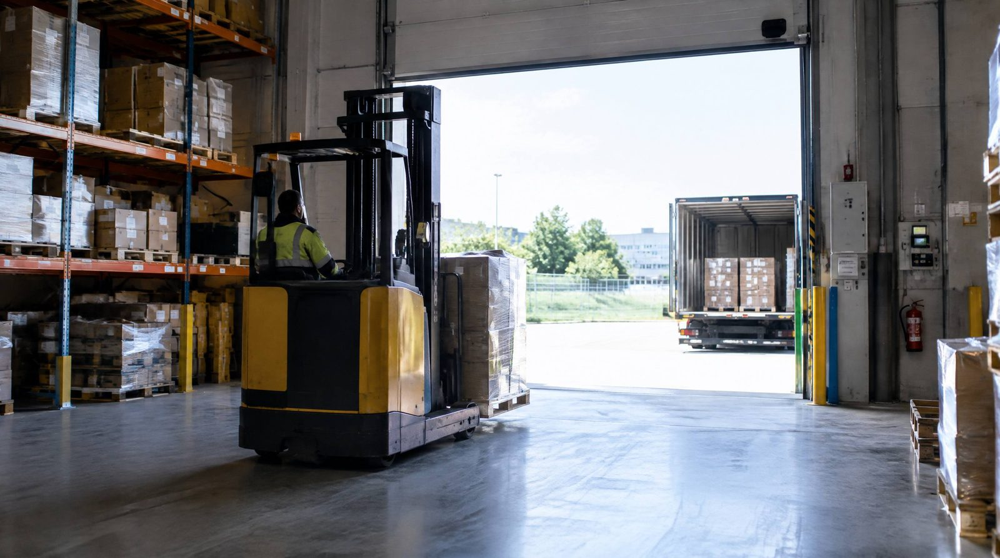

De fleste ser lageret som en nødvendig udgift. De bedste ser det som en konkurrencefordel.
Webshop B stagnerer ved 200 ordrer om dagen. B afviser kampagner, fordi lageret ikke kan følge med. Marketing vil køre tre gange volumen, lagerchefen siger nej, og kampagnen bliver ikke til noget. Konkurrenten kører den i stedet. Det var ikke produktet der tabte. Det var lageret.
Hvad er lagerets rolle?
Lageret er din operations-infrastruktur. Det påvirker:
- Leveringshastighed, kan du love 1-2 dages levering? Det kræver et lagersystem der håndterer volumen.
- Ordrenøjagtighed, forkerte ordrer koster 350 kr. stykket og ødelægger relationer
- Returhåndtering, 17-20% returrate er normalt. Hurtig og præcis returhåndtering er direkte kundeoplevelse
- Skalerbarhed, kan du håndtere Black Friday (6× normal kapacitet) uden kaos?
👉 Skalerer din webshop? Se hvordan SmartPack understøtter vækst
Konsekvenser i kroner ved 500 ordrer/dag
| Metric | Lager som bremse | Lager som motor | Forskel |
|---|---|---|---|
| Fejlrate | 3% | 0,3% | 2,7 procentpoint |
| Fejl om året | 3.750 ordrer | 375 ordrer | 3.375 færre |
| Hvad fejlene koster | 1.312.500 kr. | 131.250 kr. | 1.181.250 kr. |
| Et minut mindre per ordre | 2.083 timer/år | 0 timer | 625.000 kr. |
| I alt | ca. 1.810.000 kr./år |
Sådan er der regnet. 500 ordrer om dagen, 250 arbejdsdage, 350 kr. per fejlbehæftet ordre og 300 kr. per arbejdstime. De 3 procent er midt i det spænd på 2,4 til 4,2 procent, vi selv måler på lagre uden scanning. De 0,3 procent er det tal, vores egne beregnere regner med bagefter. Tiden er sat op som en enhed, I selv kan gange: hvert minut I sparer per ordre.
Kilder: timeprisen er DA StrukturStatistik 2025, samlede medarbejderomkostninger per præsteret time for andet manuelt arbejde. De 350 kr. er bygget op af enkeltdele i Hvad en pakkefejl koster, hvor spændet 300 til 590 kr. kommer fra E-logistik Guide 2026. Fejlraterne er SmartPacks egne observationer, ikke en undersøgelse.
Det opdager de fleste for sent
Scenarie 1: Vi kan ikke tage flere ordrer
Webshoppen ligger på 220 ordrer om dagen. Marketing vil køre en kampagne der tredobler volumen. Lagerchefen siger nej, vi kan tage 280. Kampagnen aflyses. Det er ikke lageret der koster penge her, det er den omsætning der aldrig blev til noget. Ingen bogfører den, og derfor bliver den heller ikke brugt som argument, næste gang lageret skal have et løft.
Scenarie 2: Fejlraten stiger med væksten
Webshoppen vokser fra 180 til 380 ordrer om dagen på otte måneder, og fejlraten følger med op, fordi de samme hænder skal nå mere. Ved 380 ordrer og 2,6 procent er det 2.272 fejlbehæftede ordrer om året, altså 795.000 kr. Oveni kommer det I ikke kan tælle: anmeldelserne.
Scenarie 3: Black Friday-krakket
Webshoppen ligger på 240 ordrer om dagen. Black Friday bliver 1.440, altså seks gange. Over fem dage er det 7.200 ordrer. Ved 4,8 procent fejl er 346 af dem noget nogen skal gøre om, ca. 121.000 kr. Ved 0,3 procent havde det været 22 ordrer og 7.500 kr. Forskellen er ikke travlheden. Det er om folk kan se på skærmen hvad de skal plukke, når der er seks gange så meget.
Typiske fejl
- Investerer i lager for sent, de fleste optimerer først, når vækst er gået i stå. Invester preemptivt.
- Måler ikke lagerperformance, ingen KPIer = ingen løftestang for forbedring.
- Ser lager isoleret fra marketing, en kampagne der fordobler ordrer er en katastrofe, hvis lageret ikke er klar.
Sådan gør du det rigtigt
- Definér lager-KPIer og mål ugentligt: Picks/time, fejlrate, beholdningsnøjagtighed, liggetid.
- Planlæg kapacitet 3 måneder frem, brug trenddata fra dit system.
- Koordinér med marketing, enhver kampagne eller lancering skal have en lagerplan.
SmartPack understøttelse
SmartPack giver dig realtidsdata på alle lager-KPIer, så du kan se præcis hvornår lageret går fra motor til bremse. Systemet viser picks/time, fejlrate og beholdningsnøjagtighed live, og historisk trend, så du kan planlægge skalering og ikke bare reagere på det.
- Uniq Perler: 2-3x omsætning med samme antal ansatte
- Luksushund: 20 pct. flere ordrer, samme bemanding